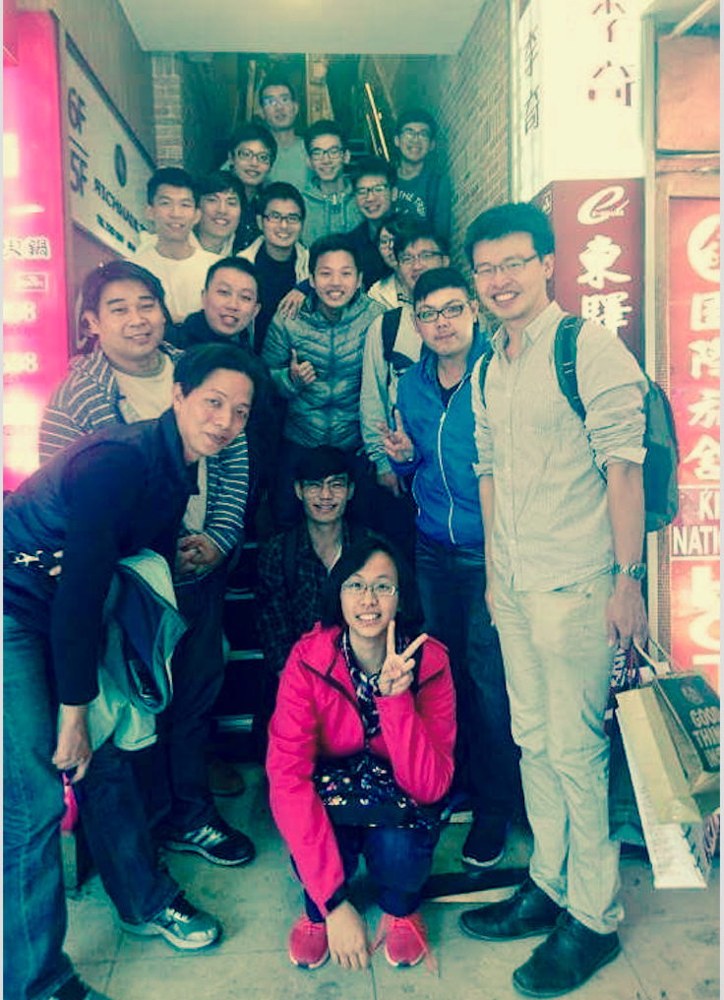

Mobile Intelligent Network Lab 210 @ 
行動智慧型網路實驗室致力於發展通訊網路信號處理的技術，包含利用統計的偵測與估計以及機器學習進行訊號處理，及利用軟體開發通訊系統及網路協定的原型。當通訊傳輸大量增加時，如何顧及通訊最重要的資源包含頻寬與消耗功率，在以單位功率考量下最有效的去融和資料。
Learn about what we do行動智慧型網路實驗室致力於發展通訊網路信號處理的技術，包含利用統計的偵測與估計以及機器學習進行訊號處理，及利用軟體開發通訊系統及網路協定的原型。當通訊傳輸大量增加時，如何顧及通訊最重要的資源包含頻寬與消耗功率，在以單位功率考量下最有效的去融和資料。
Learn about what we do
List Topic Funded By Period Role 22 Semi-supervised Learning-based Indoor Positioning using Wi-Fi Systems MOST Aug. 2018 - July. 2020 PI 21 Wi-Fi Fingerprint-Based Indoor Positioning using Deep Learning and Crowdsourcing NTUT-BIT Jan. 2018 - Dec. 2019 Co-PI 20 Learning-based Pedestrian Flow Analysis in Time-varying Indoor Environments CHTTL Feb. 2018 - Jan. 2019 Co-PI 19 基於通道響應的量測機制及室內定位演算法研究與測試 ITRI Nov. 2017 - Oct. 2018 PI 18 Super-Resolution, Compressive-Sensing and Deep-Learning based Network Positioning using Channel Impulse Response (基於多路徑資訊的超解析、壓縮感測、及深度學習網路定位演算法設計與實作) MOST Aug 2017 - July 2018 PI 17 可見光通訊與定位之設計與實作 USTP-NTUT-NTPU Research Cooperation Jan. 2017 - Dec. 2017 PI 16 Talent cultivation program for advanced mobile broadband technology: Software Defined Wireless Networks (行動寬頻尖端技術課程推廣計畫 - 軟體定義無線網路) 教育部 Dec. 2016 - Feb. 2018 Course-PI 15 Design of 5G Location-based Vehicular Networks for Smart Car (適用於智慧車之5G位基型車聯網設計) MOST Aug. 2016 - July 2017 PI 14 新式人機互動技術與設計組 -- 物聯網及雲端技術與應用計畫 發展典範科技大學計畫 Jan. 2016 - Dec. 2016 Member 13 Research on TOA-based Location Estimation Algorithm (基於TOA的定位算法研究) NTUT-USTB Research Cooperation Jan. 2016 - Dec. 2016 PI 12 3GPP室內定位後續研究 USTP-NTUT-NTPU Research Cooperation Jan. 2016 - Dec. 2016 PI 11 Hybrid Network Deployment and Wireless Positioning Algorithms for Indoor Environment (混合式網路佈建及室內位置估算與追蹤技術) U-Media Corp. (宇智網通) July 2015 - June 2016 Co-PI 10 多天線系統應用技術開發(MIMO) 分項, 物聯網及雲端技術與應用計畫 發展典範科技大學計畫 Jan. 2015 - Dec. 2015 Member 9 Research and Implementation on Scientific Equipment Monitoring for Digital Convergent Broadband and Cloud Services II (數位匯流寬頻技術及雲端服務於科技設備監控之研究與運用 第二期：以性侵害犯罪付保護管束人科技設備監控為例) Academic Development Program, Taiwan High Prosecutor Office (臺灣高等法院檢察署科專計畫) Jan. 2015 - Dec. 2015 Co-PI 8 室內定位及3GPP通訊系統研究發展 USTP-NTUT-NTPU Research Cooperation Jan. 2015 - Dec. 2015 PI 7 Distributed Indoor Cooperative Localization (II) (分布式室內協作定位技術研究 II) NTUT-BIT Research Cooperationr Jan. 2015 - Dec. 2015 PI 6 Robust Clustering in Cooperative Vehicular Networks for the Intelligent Carpool Systems (適用於智慧型共乘系統的合作式車載網路強健群聚設計) MOST Aug. 2014 - July 2016 PI 5 Research and Development of Intelligent Carpool Systems (智慧型汽車共乘系統之研發--總計畫) MOST Aug. 2014 - July 2016 Co-PI 4 Distributed Indoor Cooperative Localization (分布式室內協作定位技術研究) NTUT-BIT Research Cooperation May 2014 - Apr. 2015 PI 3 Research and Implementation on Scientific Equipment Monitoring for Digital Convergent Broadband and Cloud Services (數位匯流寬頻技術及雲端服務於科技設備監控之研究與運用計畫：以性侵害犯罪付保護管束人為例) Academic Development Program, Taiwan High Prosecutor Office Mar. 2014 - Dec. 2014 Co-PI 2 Simulation, and Performance Analysis of Network Architectures for Cooperative Localization (合作式定位網路架構之設計、模擬與效能分析) NSC Aug. 2013 - July 2014 PI 1 Real-time Filtering Techniques for Cooperative Localization (合作式定位之即時濾波技術研究) NSC Sep. 2012 - July 2013 PI

Graduate Students
游日存
碩一 / 108 入學 / 畢業學校:北科
基於毫米波的人體姿態辨識
andy0010 AT hotmail.com.tw
吳展逸
碩一 / 108 入學 / 畢業學校:北科
基於Wi-Fi的室內定位
a3327642 AT gmail.com
林聖曄
碩一 / 108 入學 / 畢業學校:華東理工
407796844 AT qq.com
楊其峰
碩一 / 108 入學 / 畢業學校:聯合
軟體無線網狀網路於邊緣運算的應用
stu92012 AT gmail.com
邱志高
碩一 / 108 入學 / 畢業學校:義守
深度學習於醫學影像的應用
e9190712 AT kimo.com
李政璋
碩二 / 107 入學 / 畢業學校:北科
深度學習於醫學影像的應用
benzxa AT gmail.com
李陞陽
碩二 / 107 入學 / 畢業學校:北科
軟體無線網狀網路於邊緣運算的應用
stube0806450 AT gmail.com
許采婷
碩二 / 107 入學 / 畢業學校:聯合
半監督式 Wi-Fi 室內定位
kaka1212331 AT yahoo.com.tw
Alumni
嚴勵
106 入學 / 畢業學校:淡江
應用深度學習在無線訊號為基礎的目標辨識
das73541 AT gmail.com
吳易寬
106 入學 / 畢業學校:元智
應用深度學習在無線訊號為基礎的目標辨識
cosmos820604 AT gmail.com
江建勳
106 入學 / 畢業學校:中原
結合 SDN 與 OAI 的 small cell 系統開發
ga795463 AT gmail.com
王才茂
101 入學 / 畢業學校:元智 / Now: 台灣典範半導體公司
Ray Tracing Assisted Location Estimation for Indoor Environment
*IEEE Tran. I&M 2017
email: tinywang0914 AT gmail.com
姚承佑
102 入學 / 畢業學校:虎尾科 / Now: 研華
Design and Implementation of Distributed Transmit Beamforming for OFDM system
*2014 NI校園通訊競賽 軟體定義無線電系統組 第二名
email: wisher2424 AT gmail.com
吳孟剛
102 入學 / 畢業學校:中原 / Now: 光寶
Indoor Navigation for Location-Based Mesh Network
x76629 AT gmail.com
吳俊衛
102 入學 / 畢業學校:淡江 / Now: 明泰
Clustering Design for LTE-A Vehicular Networks
email: andy791113 AT gmail.com
唐志豪
102 入學 / 畢業學校:淡江 / Now: 華擎
Design and Implementation of Distributed Transmit Beamforming for OFDM system
*IEEE Comm. Letter 2016
email: josh0916 AT outlook.com
林義傑
103 入學 / 畢業學校:虎尾科 / Now: 光寶
Super-resolution aided Indoor Positioning Fingerprinting based on Channel Impulse Response Measurement
*Conf. Paper in WCNC 2017
death1220 AT gmail.com
黃立洋
103 入學 / 畢業學校:銘傳
Resource allocation for Vehicle to Vehicle communication in LTE-A Networks
*北科互聯網+創業競賽 Top-10
huangwowtw AT gmail.com
鄭智元
103 入學 / 畢業學校:聯合 / Now: 明泰
Design and Implementation of Wireless Mesh Open vSwitch
*2016 通訊大賽 SDN 組評審團特別獎
email: cuteking00 AT gmail.com
唐志豪
103 入學 / 畢業學校:虎尾科 / Now: 亞旭
Indoor positioning based on 3GPP 3D channel model
*Conf. Paper in APWCS 2017
email: ken70504 AT gmail.com
倪劭諭
103-2 入學 / 畢業學校:義守 / Now:資策會
Design and Implementation of a middleware layer for location-based mesh network
*Conf. Paper in MC2016
email: eric1114473 AT gmail.com
后婕
104 入學 / 畢業學校:虎尾科
Device to device messanger with Wifi Direct/BLE
*北科互聯網+創業競賽 Top-10
janicehou1993 AT gmail.com
吳冠賢
104 入學 / 畢業學校:北科
A Deep Neural Network-Based Indoor Positioning Method using Channel State Information
email: t100820331 AT ntut.org.tw
魏志嘉
104 入學 / 畢業學校:高第一科大
Implementation of Filtered-OFDM-based Air-to-ground Communication Using Software-Defined Radio Platform
weikar6644 AT gmail.com
王彥蓉
105 入學 / 畢業學校:嘉義大學
A Single-Site Localization via Frequency Domain-based Multipath Fingerprinting
email: chocolate0398 AT gmail.com
葉又銘
105 入學 / 畢業學校:亞東
Design and Implementation of Load-balancing Algorithm for Software-Defined Multi-channel Wireless Mesh Network
email: ray28850101 AT gmail.com
白承玄
105 入學 / 畢業學校:淡江
Implementation and Analysis of Time Synchronization for Inter-Cell Interference Coordination in Small Cells using OAI
email: chshbai AT gmail.com
簡瑋辰
105 入學 / 畢業學校:亞東
Design and Implementation of Multi-user Multi-channel selection for Software-Defined Wireless Mesh Network
mybaby0069su01 AT gmail.com
碩士在職專班
專題生
周次 日期 主題 投影片、手稿 作業、其他活動 1 Sep. 9 通訊簡介 Intro 2 Sep. 16/20 基本數學複習 數學複習 3 Sep. 23/27 停課 4 Sep. 30/Oct. 4 Ch. 1 Ch. 1 5 Oct. 7 Ch. 1 6 Oct. 14/18 Ch. 1 7 Oct. 21/25 Ch. 1 8 Oct. 28/Nov. 1 Ch. 1 9 Nov. 8 期中考 Nov. 4 (一) 停課一次 10 Nov. 15 物聯網課程：物聯網系統概論，時間: Nov. 15 16:10-21:20，地點：綜科 211 Nov. 11 (一) 停課一次
周次 日期 主題 投影片 LAB 1 Sep. 13 中秋節 2 Sep. 20 課程介紹 課程訊息 LAB 0 3 Sep. 27 停課 4 Oct. 4 The Road To SDN The Road To SDN GitLab 使用 5 Oct. 11 國慶日連假 6 Oct. 18 The Road To SDN 7 Oct. 25 /校友演講 7 Oct. 25 /校友演講 8 Nov. 1 How SDN Works – Introduction of OpenFlow Protocol How SDN Works:OpenFlow LAB 1: Mininet 9 Nov. 8 LAB 2: Mininet+Controller
臺北科技大學綜合科館 210 室 / 分機 2210